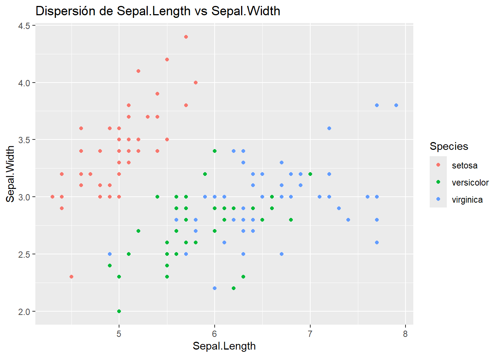
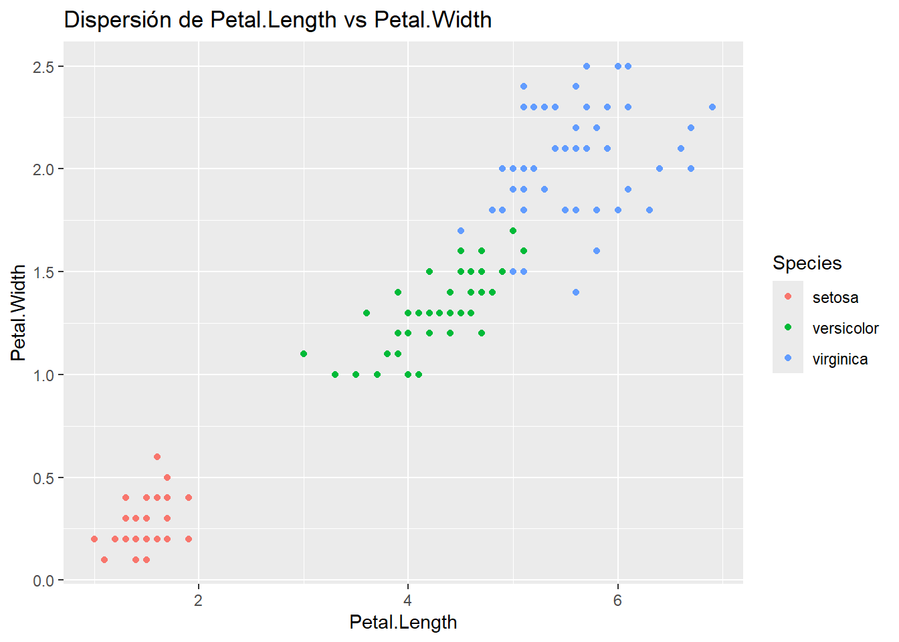
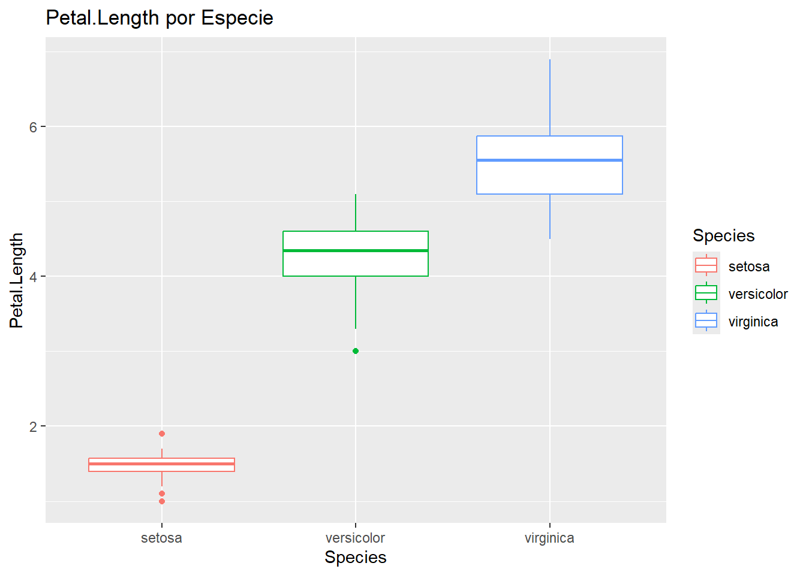
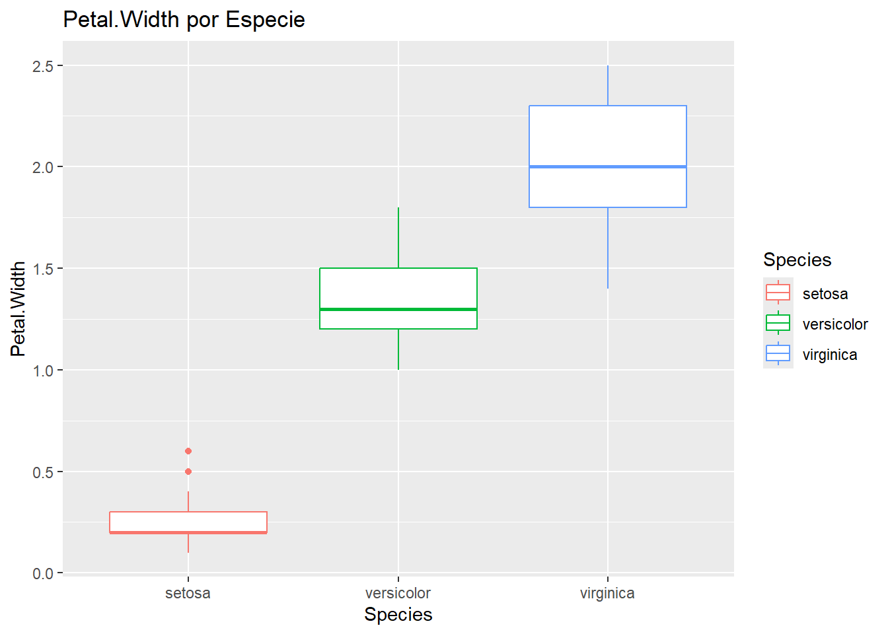
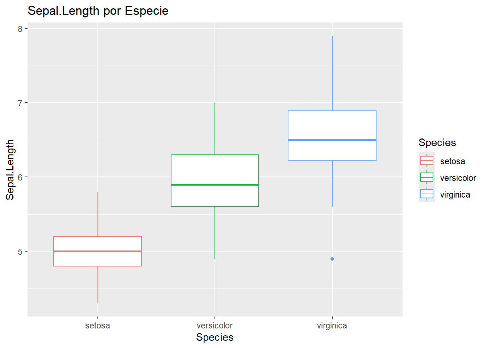
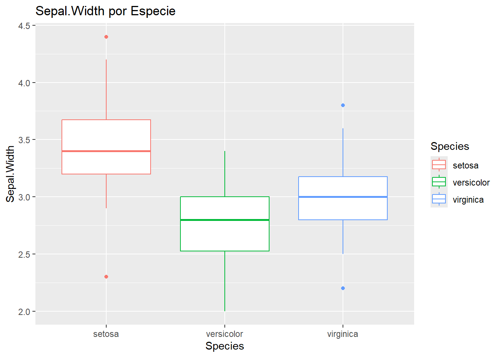

La estadística es una rama fundamental de las matemáticas que se encarga de:
Recopilación (Ecuestas,observaciones,registros)
Representación (Analítica y gráfica)
Análisis (Modelación)
Interpretación (Resultado)
De un conjunto de datos
En la sociedad actual, la estadística desempeña un papel crucial en diversos ámbitos, desde la investigación científica hasta la toma de decisiones empresariales y gubernamentales.
Términos de Estadítica:
Población: Conjunto de elementos en los que se observa alguna característica.
Muestra: Conjunto de unidades representativas de una población extraída mediante un método de muestreo.
Parámetros: Características numericas que describe una variable observada en la población.
Estadísticos: Función de los valores de la muestra.
Individuo: Cada uno de los elementos que componen la población.
Media: Es la medida de tendencia central más conocida. Se calcula sumando todos los valores de un conjunto de datos y dividiendo el resultado por el número total de valores.
Mediana: Es el valor que se encuentra en el medio de un conjunto de datos ordenados. Si hay un número par de valores, la mediana es el promedio de los dos valores centrales.
Moda: Es el valor que ocurre con mayor frecuencia en un conjunto de datos.
Desviación estándar: Es una medida de dispersión que indica cuánto se desvían los valores de un conjunto de datos de su media.
Varianza: Es una medida de dispersión que representa la variabilidad de un conjunto de datos respecto a su media.
RStudio es un entorno de desarrollo integrado (IDE) diseñado específicamente para el lenguaje de programación R, ampliamente utilizado en análisis estadístico, visualización de datos y minería de datos. RStudio facilita el trabajo con R al proporcionar una interfaz amigable y una serie de herramientas que simplifican el proceso de análisis de datos.
Características Clave de RStudio
Editor de código: RStudio ofrece un editor de código con resaltado de sintaxis, autocompletado y otras características útiles para escribir y editar scripts de R.
Consola interactiva: Permite ejecutar código de R línea por línea y ver los resultados de inmediato, lo que facilita la exploración y prueba de ideas.
Herramientas de visualización: Incluye opciones para crear gráficos estadísticos y visualizaciones de datos de manera sencilla y altamente personalizable.
Gestión de paquetes: Proporciona una interfaz para instalar, actualizar y cargar paquetes de R, que son colecciones de funciones y herramientas adicionales.
Entorno de trabajo organizado: RStudio mantiene un seguimiento de los archivos, gráficos, paquetes y objetos utilizados en un proyecto, lo que facilita la organización y reproducibilidad del trabajo.
Ejemplo.
Considere iris. Estos datos contienen de mediciones de largo y ancho de los pétalos y sépalos de 150 flores de iris (50 flores de cada una de las tres especies diferentes: Setosa, Versicolor y Virginica).
Realice un análisis exploratorio para comparar esas tres especies
# Trabajaremos con la data irisdata(iris)str(iris) # Con este comando conoceremos la estructura de nuestra data
La función summary() nos ayuda a sacar una estadística descriptiva de cada una de nuestras variables (Mínimo, máximo, media, mediana, primer y tercer cuartil).
summary(iris)
Sepal.Length Sepal.Width Petal.Length Petal.Width
Min. :4.300 Min. :2.000 Min. :1.000 Min. :0.100
1st Qu.:5.100 1st Qu.:2.800 1st Qu.:1.600 1st Qu.:0.300
Median :5.800 Median :3.000 Median :4.350 Median :1.300
Mean :5.843 Mean :3.057 Mean :3.758 Mean :1.199
3rd Qu.:6.400 3rd Qu.:3.300 3rd Qu.:5.100 3rd Qu.:1.800
Max. :7.900 Max. :4.400 Max. :6.900 Max. :2.500
Species
setosa :50
versicolor:50
virginica :50
Realizamoslas gráficas con la librería GGPLOT2
library(ggplot2)# Gráfico de dispersión de Sepal.Length vs Sepal.Widthggplot(iris, aes(x = Sepal.Length, y = Sepal.Width, color = Species)) +geom_point() +labs(title ="Dispersión de Sepal.Length vs Sepal.Width")

# Gráfico de dispersión de Petal.Length vs Petal.Widthggplot(iris, aes(x = Petal.Length, y = Petal.Width, color = Species)) +geom_point() +labs(title ="Dispersión de Petal.Length vs Petal.Width")

# Boxplot de Petal.Length por especieggplot(iris, aes(x = Species, y = Petal.Length, color = Species)) +geom_boxplot() +labs(title ="Petal.Length por Especie")

# Boxplot de Petal.Width por especieggplot(iris, aes(x = Species, y = Petal.Width, color = Species)) +geom_boxplot() +labs(title ="Petal.Width por Especie")

# Boxplot de Sepal.Length por especieggplot(iris, aes(x = Species, y = Sepal.Length, color = Species)) +geom_boxplot() +labs(title ="Sepal.Length por Especie")

# Boxplot de Sepal.Width por especieggplot(iris, aes(x = Species, y = Sepal.Width, color = Species)) +geom_boxplot() +labs(title ="Sepal.Width por Especie")

Análisis estadístico:
Gráfico 1: La especie setosa tiene sépalos más anchos que versicolor. La longitud del sépalo de versicolor es más dispersa que la de setosa.
Gráfico 2: La especie setosa tiene pétalos menos anchos y cortos. La longitud del pétalo de versicolor oscila entre 3 y 5.1 cm. Virginica tiene los pétalos más anchos y largos.
Gráficos 3 y 4: Virginica tiene los pétalos más largos y anchos (media de 5.6 cm y 2 cm, respectivamente). Versicolor presenta un valor atípico en longitud y menor dispersión que virginica. Setosa tiene los pétalos más cortos y estrechos, con algunos valores atípicos en longitud y ancho.
Gráficos 5 y 6: Virginica tiene los sépalos más largos, pero setosa los tiene más anchos. Versicolor tiene sépalos más estrechos que setosa y más largos que esta.